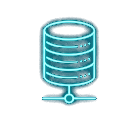
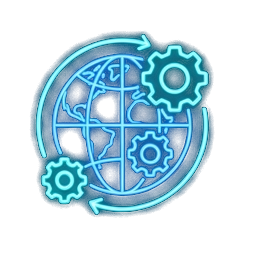
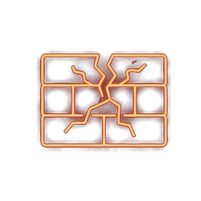

利用 NotebookLM 擴增檢索與 AI Agent 偏見偵測，建構包容性數位思辨課程
科技與性別教育大綱 · 教學指引簡報
知識體系的底層建設與 AI 擴增檢索 (NotebookLM)

拖動滑桿，觀察生成式 AI 訓練資料不均產生的「演算法偏見 (Algorithmic Bias)」
運用前沿深度研究技術進行跨學科思辨

從「被動覺察」走向「主動解決問題」的設計思考

學員在此階段從「AI 使用者」晉升為「平權工具創作者」
零程式碼與前端技術的跨界平權實驗
基於 PARTS 原則的系統化網站開發與落地驗收
透過 NotebookLM、AI Agent 與包容性設計，讓我們共同打造更具平等視野的科技教育！
科技與性別教育大綱專案組